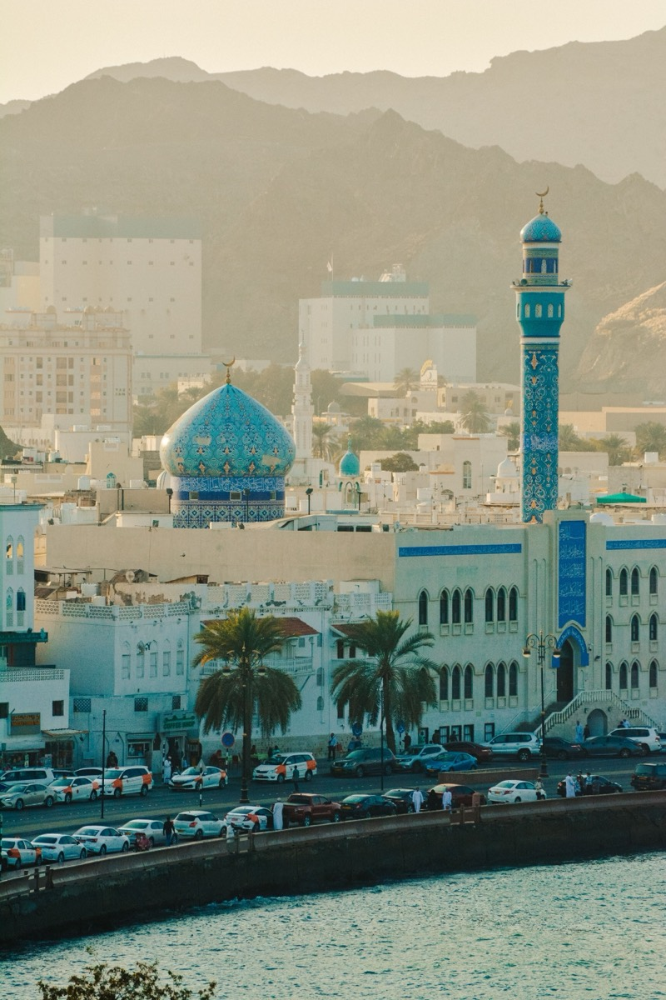

Things to do in Muscat: Grand Mosque, Mutrah Souq and Old Muscat
The sights worth your time, visiting hours and dress code, and how many days to spend in the capital.

Muscat at a glance
Muscat is a long, low city between the mountains and the Gulf of Oman, with white buildings, forts on the headlands and a waterfront that suits an evening walk. It is quieter and more traditional than many Gulf capitals, and it works well as the first or last stop of a trip to Oman.
Sultan Qaboos Grand Mosque
The Grand Mosque is the highlight of most visits, and the best-known mosque in Oman open to non-Muslim visitors. Visiting hours are in the morning, usually between about 8:00 and 11:00 from Saturday to Thursday, and it is closed to visitors on Fridays. Hours can change, so check before you go. The dress code is strict: shoulders, arms and legs must be covered, women need to cover their hair, and eating, drinking and smoking are not allowed in the mosque area.
Mutrah Corniche and Souq
Mutrah is the old port district. Walk along the corniche, then lose yourself in the covered souq, where you can buy frankincense, silver, textiles and spices. Go in the late afternoon or early evening, when it is cooler and the market is at its liveliest.
Old Muscat
Old Muscat is the historic heart of the city. You can see the exterior of Al Alam Palace, the ceremonial palace of the Sultan, flanked by the two 16th-century Portuguese forts of Al Jalali and Al Mirani. The forts are usually a photo stop seen from outside. The nearby Bait Al Zubair museum covers Omani heritage.
Royal Opera House
The Royal Opera House opened in 2011 and combines Islamic and Italianate architecture. Visitors can usually tour the building by day, and there is a smart dress code for performances.
Beaches and the sea
Muscat also has a coast: Qurum beach for a swim, and boat trips that include dolphin watching. Our activities page lists what we can add.
How many days in Muscat?
One full day covers the Grand Mosque, Mutrah and Old Muscat. Two days gives you time for the Opera House, a museum and the coast. Our Muscat Escape is a 4-day introduction to the capital, and Muscat is also the starting point of our longer trips. See how many days to spend in Oman.
What to wear
Oman is a conservative country: dress modestly in public, with shoulders and knees covered. Light, loose cotton or linen is the most comfortable. See our best time to visit Oman guide for seasons.
Quick answers
Is the Sultan Qaboos Grand Mosque open to visitors?
Yes, in the morning from Saturday to Thursday, typically between about 8:00 and 11:00. It is closed to visitors on Fridays. Check the hours before you go, and follow the dress code.
How many days do I need in Muscat?
One full day covers the main sights: the Grand Mosque, Mutrah Souq and Old Muscat. Two days lets you add the Royal Opera House, a museum and the coast.
What should I wear in Muscat?
Dress modestly with shoulders and knees covered. Inside the Grand Mosque, arms and legs must be covered, and women need to cover their hair.
Related guides
Want Muscat in your Oman trip?
Tell us when you are travelling and we will build the capital into your itinerary.
Get Your Free Quote →